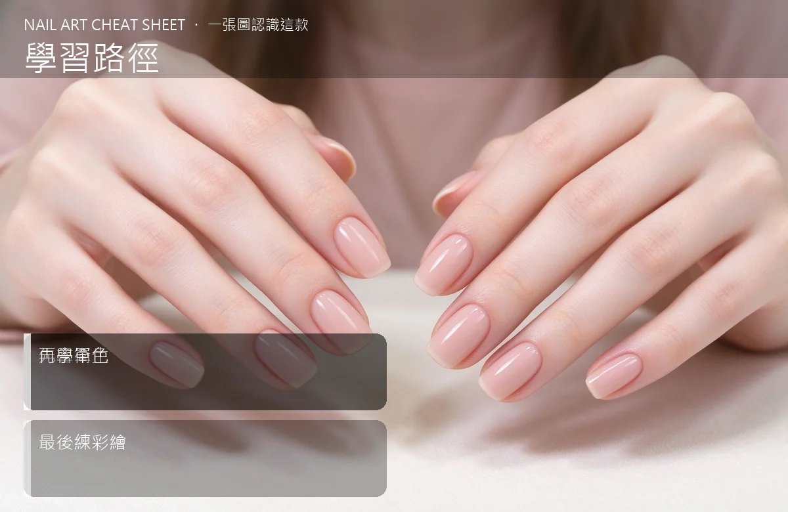

美甲學習路徑是什麼？入門入門攻略
想當美甲師，最容易走歪的不是技術，是「順序」。
學習路徑原理與辨識重點：美甲師不說的先會衛生
很多新手一上來就想畫貓眼、畫手繪，結果連底膠都塗不勻。其實美甲是蓋房子：衛生消毒是水電、前置修型是地基、單色是牆、彩繪是裝潢。順序顛倒，房子很快垮。先把基本功練到閉著眼睛都不會出錯，再學花俏的。
誰適合做學習路徑？想轉行的人對號入座
想轉職美甲師、或在家自己玩想進一步接案的人；也適合亂買課、越學越慌的迷茫新手。
學習路徑美甲施作步驟：基礎班→進階→實習
第一階段：衛生＋修型＋基礎前置（2–4 週）→ 第二階段：單色凝膠＋卸甲＋保養（1–2 個月）→ 第三階段：延長＋補甲＋壓力點（2–3 個月）→ 第四階段：彩繪＋進階矯正。每階段都在自己或 model 手上練到不會被打槍再前進。
學習路徑優缺點分析：美甲持久度與傷甲評估
| 優點 | 說明 |
|---|---|
| 按步就班，技術底子扎實；未來接高單價矯正、孕甲也接得住。 | 是通用流派的招牌，入門就能上手 |
| 缺點 | 說明 |
| 慢。前半年可能都在練基本功、看起來不花俏——但這段時間決定你未來的天花板。 | 前置與最忌花錢上一堆進階課卻跳過基本功。彩繪老師再強，你底膠塗不平，做出來還是歪。沒顧好會打折 |

學習路徑新手雷區：再學單色與常見錯誤
注意：最忌花錢上一堆進階課卻跳過基本功。彩繪老師再強，你底膠塗不平，做出來還是歪。
學習路徑和其他美甲做法的差別比較
跟「新手工具包」不同：那篇講要買什麼；這篇講先學什麼、後學什麼、每階段多久。
學習路徑美甲常見問題 FAQ
Q：一定要補習班嗎？ A：預算夠建議給老師帶，少走半年冤枉路；預算緊，線上課＋自己練＋找 model 也可以，但要自律。
Q：學多久可以接案？ A：基本功＋單色＋簡單延長，約 3–6 個月；但「能接」和「接得長久」差很多，第一年別急著收高價。